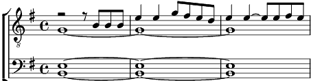

1. El muro bianco, drio de la to casa
Ti te saltavi come un oseleto,
Joska la rossa, pèle de bombasa,
Tute le sere prima de 'nà in leto.
Te stavi lì, co le to scarpe rote
Te ne vardavi drio da j' oci mori
E te balavi alegra tuta note
E i baldi alpini te cantava i cori. Oh.
Refrain:
Joska, Joska, Joska,
Salta la mura!
Fin che la dura, oh.
Joska, Joska, Joska,
Salta la mura!
Balla con mi! Oh. (2x)
2. Ti te portavi el sole ogni matina,
E de j 'Alpin te geri la morosa,
Sorela, mama, boca canterina,
Oci del sol, meravigliosa rosa.
Xe tanto e tanto nù, ca te zerchèmo.
Joska la rossa, amor, rosa spanja.
Ma dove sito andà? Ma dove andemo?
Semo ramenghi. O morti. E così sia. Oh.
Refrain
3. Busa con crose. Sarà sta i putèi?
La par 'na bara e invece xe 'na cuna.
E dentro dorme tuti i to fradei,
Fermi, impalà, co i oci ne la luna. Oh.
Joska, Joska, Joska,
Salta la mura!
Fin che la dura, oh.
Joska, Joska, Joska,
Salta la mura!
Fermate là! Oh.
(3x accelerando)
Fermate là